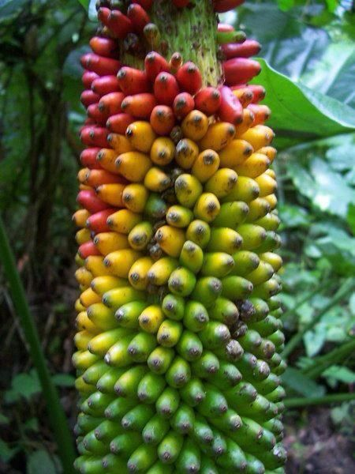
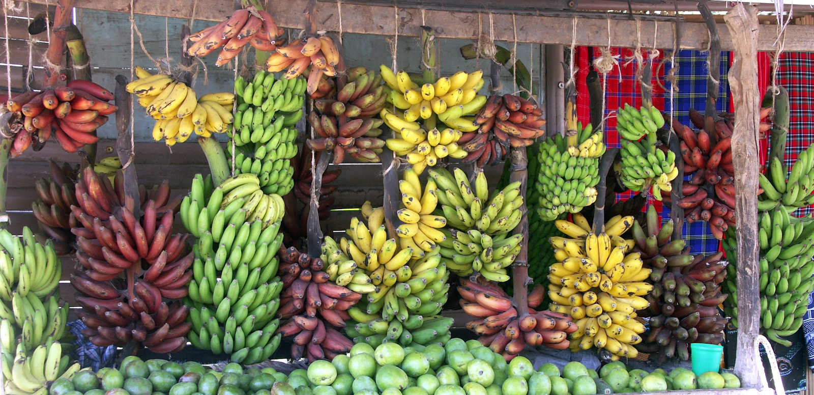

|
The Banana belongs to the Musa Acuminata and Musa Balbisiana groups and the Musaceae family. Banana plants are grown from bulbs, or rhizomes, rather than seeds and the fruit of the banana plant is what is the major part of the plant that is picked and sold. Banana plants are considered perennials due to the growth pattern of the rhizome. The pseudostem of the banana plant, the thick stalk that can grown to large heights, does not live for very long but after the pseudostem dies and choppers come and remove the waste, the rhizome in the ground will start the growth of a new pseudostem. The pseudostem dies each time after the banana fruits are harvested. This process can repeat many times before the rhizome dies. |
 |
|  |
Cultivated banana fruit have 33 chromosomes whilst wild bananas only have 22 chromosomes which obviously shows that genetic mutations took a massive role in making the bananas that are bought and sold today. The banana fruit grow in bunches called “hands” due to their fingerlike shape. Bananas matures 60 to 90 days after the flower of the plant appears. Bananas do not grow in a specific season and are typically available year-round in most parts of the world. The color of the skin of the banana also comes in more than just the most popular yellow color. Bananas can grow to be red,brown, and green in color as well. |